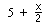
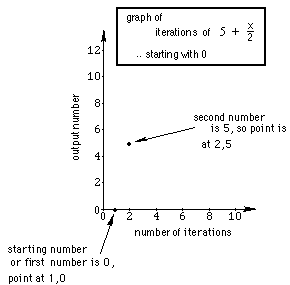
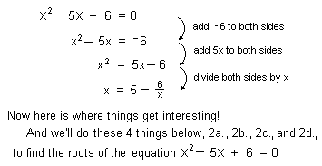

Sample Problems from Chapter 8 (2nd part-
iteration)
Chapter 8: Solving Equations and Iteration. Don's
videotape #2 shows a 6 and 7 year old working on iterating
functions.
The idea of
iteration for me, started with trying to solve a quadratic equation
10 different ways! In the process I got into continued
fractions, infinite continued fractions, and iteration- it has been a
very
exciting area of mathematics with applications to population increase,
finding the square root of a number, and extends to the field of chaos
theory and fractals!
And my students find it interesting, which is the most important
thing.
For my younger students I usually start with a rule or function
like
2x. We put a number in for x, get the number out, then put
that output in for x, and continue that process. We get an
infinite sequence of numbers. In this case the sequence diverges,
doesn't go to a number. For example if we put 3->x, we get 6. We
then put 6->x and we get 12.
We get the infinite sequence 3, 6,
12, 24, ...
Later on, with older students, it is not a big step
to use 1.1x as the function and show this is the same problem as
increasing the population of a town 10% each year. A very important
application.
A teacher in one of Don's workshops,
made up this function:. We'll pick a number, say 0,
and put it in for x. What do we get out? 5 + 0/2 = 5. Then we put 5 in
for x. What do we get out this time? 5 + 5/2 = 7.5 Now let's keep track
of the infinite sequence we get: 0, 5, 7.5, 8.75, ... The question is
what's happening? Does this sequence converge? I ask my students to
do the first 8 or so by hand, to make sure they can divide and write the
answer as a fraction or mixed number and a decimal. Only then
will I let them use a calulator to do more. Then I'll get
them to
the computer to use Mathematica to do 200 iterations and let it
carry the answer to 100 decimal places!
Finish the graph of this sequence, the beginning of which is shown
below:

Start with a new number,
like 100 and see what happens.
Start with -17 and see what happens.
Graph these sequences on the same graph paper. Is there a pattern?
Each infinite sequence has a limit of 10 for . Look at the numbers there. What do you
think would happen if we started with 6 + x/2 ? a + x/2 ?
What
would happen with 5 + x/3 ? 5 + x/4 ? Another interesting function I
do with my younger students is 6/x. Interesting things happen with this
one!
11 ways to solve a quadratic
equation
Method 1. By guessing and the sum
and product of the roots (see above)
Method 2. Solving x2 - 5x + 6 = 0 for
x to get x =  .
.
Jonathan, at
age 7, solved this quadratic equation like this:

2a.We can get an infinite continued fraction and
find approximations of the roots of the equation
2b.We'll iterate the function starting with different numbers, then graph
these sequences.
2c.Graph 3 successive 'pieces' of the infinite
continued fraction
2d.Graph y = , then connect points whose coordinates are
consecutive input numbers
Methods 3., 4., and 5. You solve x2 - 5x + 6 = 0
for x, but in a different way than Jonathan did, (but not one of methods
6-11 below), and do the corresponding
things as in 2a., 2b., 2c. and 2d above. You might find more than
3 other ways! Please let me know if you do.
Method 6. Solving
x2
- x - 1 = 0 using a calculator to hone in on the two solutions.
Method 7. By factoring (one of the 'normal' ways)
Method 8. By completing the square
Method 9. Using the quadratic formula
Method 10. Graph x2 - 5x + 6 =
y (where it crosses the x-axis will be the roots, if they are real)
Method 11. Spiraling in to the intersection of 2 curves
Flash! This just happened (10/26/96): Colleen, a 7th
grader, solved
x2 - x - 1 = 0 and got
x = x2 - 1. Try iterating this. It's exciting when
something unexpected happens! That's what makes my teaching interesting
and enjoyable. I've spent the last 2 hours working on this in
Mathematica.
To some answers to problems above from Ch. 8- part
2, iteration
To problems from Ch. 8 part one-
solving equations
To order Don's
materials
To choose sample problems from
other chapters
Mathman Home